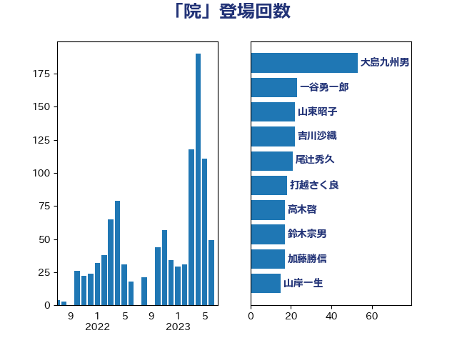

単語「院」

| 大島九州男 | れいわ新選組 | 53 回 |
| 一谷勇一郎 | 日本維新の会 | 23 回 |
| 山東昭子 | 自由民主党 | 22 回 |
| 吉川沙織 | 立憲民主党 | 22 回 |
| 尾辻秀久 | 無所属 | 21 回 |
| 打越さく良 | 立憲民主党 | 18 回 |
| 高木啓 | 自由民主党 | 17 回 |
| 鈴木宗男 | 日本維新の会 | 17 回 |
| 加藤勝信 | 自由民主党 | 17 回 |
| 山岸一生 | 立憲民主党 | 15 回 |
| 山口俊一 | 自由民主党 | 14 回 |
| 細田博之 | 自由民主党 | 13 回 |
| 林芳正 | 自由民主党 | 13 回 |
| 江田憲司 | 立憲民主党 | 11 回 |
| 仁比聡平 | 日本共産党 | 10 回 |
| 安江伸夫 | 公明党 | 9 回 |
| 石井準一 | 自由民主党 | 8 回 |
| 矢倉克夫 | 公明党 | 8 回 |
| 盛山正仁 | 自由民主党 | 8 回 |
| 田中健 | 国民民主党 | 8 回 |
| 新妻秀規 | 公明党 | 8 回 |
| 高木真理 | 立憲民主党 | 7 回 |
| 若松謙維 | 公明党 | 7 回 |
| 石田昌宏 | 自由民主党 | 7 回 |
| 猪瀬直樹 | 日本維新の会 | 7 回 |
| 小西洋之 | 立憲民主党 | 7 回 |
| 阿部知子 | 立憲民主党 | 6 回 |
| 玉木雄一郎 | 国民民主党 | 6 回 |
| 浜田聡 | NHK党 | 6 回 |
| 柴田巧 | 日本維新の会 | 6 回 |
| 斎藤アレックス | 国民民主党 | 6 回 |
| 馬場伸幸 | 日本維新の会 | 5 回 |
| 阿部弘樹 | 日本維新の会 | 5 回 |
| 野村哲郎 | 自由民主党 | 5 回 |
| 西田実仁 | 公明党 | 5 回 |
| 福重隆浩 | 公明党 | 5 回 |
| 牧野たかお | 自由民主党 | 5 回 |
| 東徹 | 日本維新の会 | 5 回 |
| 杉尾秀哉 | 立憲民主党 | 5 回 |
| 本田顕子 | 自由民主党 | 5 回 |
| 山本太郎 | れいわ新選組 | 5 回 |
| 奥野総一郎 | 立憲民主党 | 5 回 |
| 大島敦 | 立憲民主党 | 5 回 |
| 倉林明子 | 日本共産党 | 5 回 |
| 井上哲士 | 日本共産党 | 5 回 |
| 青山繁晴 | 自由民主党 | 4 回 |
| 足立康史 | 日本維新の会 | 4 回 |
| 衛藤晟一 | 自由民主党 | 4 回 |
| 福岡資麿 | 自由民主党 | 4 回 |
| 牧山ひろえ | 立憲民主党 | 4 回 |
| 永岡桂子 | 自由民主党 | 4 回 |
| 森本真治 | 立憲民主党 | 4 回 |
| 柘植芳文 | 自由民主党 | 4 回 |
| 川田龍平 | 立憲民主党 | 4 回 |
| 山田宏 | 自由民主党 | 4 回 |
| 小渕優子 | 自由民主党 | 4 回 |
| 宮沢洋一 | 自由民主党 | 4 回 |
| 大西健介 | 立憲民主党 | 4 回 |
| 塩川鉄也 | 日本共産党 | 4 回 |
| 吉田はるみ | 立憲民主党 | 4 回 |
| 伊波洋一 | 無所属 | 4 回 |
| 関口昌一 | 自由民主党 | 3 回 |
| 長浜博行 | 無所属 | 3 回 |
| 羽生田俊 | 自由民主党 | 3 回 |
| 石井章 | 日本維新の会 | 3 回 |
| 清水貴之 | 日本維新の会 | 3 回 |
| 泉健太 | 立憲民主党 | 3 回 |
| 櫛渕万里 | れいわ新選組 | 3 回 |
| 梅村聡 | 日本維新の会 | 3 回 |
| 枝野幸男 | 立憲民主党 | 3 回 |
| 本庄知史 | 立憲民主党 | 3 回 |
| 山田俊男 | 自由民主党 | 3 回 |
| 山本順三 | 自由民主党 | 3 回 |
| 山崎正昭 | 自由民主党 | 3 回 |
| 山下雄平 | 自由民主党 | 3 回 |
| 小野泰輔 | 日本維新の会 | 3 回 |
| 小沼巧 | 立憲民主党 | 3 回 |
| 小林一大 | 自由民主党 | 3 回 |
| 宮本徹 | 日本共産党 | 3 回 |
| 吉田とも代 | 日本維新の会 | 3 回 |
| 勝部賢志 | 立憲民主党 | 3 回 |
| 佐藤信秋 | 自由民主党 | 3 回 |
| 佐々木さやか | 公明党 | 3 回 |
| 伊藤孝恵 | 国民民主党 | 3 回 |
| 中西祐介 | 自由民主党 | 3 回 |
| 三木圭恵 | 日本維新の会 | 3 回 |
| 齋藤健 | 自由民主党 | 2 回 |
| 麻生太郎 | 自由民主党 | 2 回 |
| 高木毅 | 自由民主党 | 2 回 |
| 高市早苗 | 自由民主党 | 2 回 |
| 青柳陽一郎 | 立憲民主党 | 2 回 |
| 青木愛 | 立憲民主党 | 2 回 |
| 青山大人 | 立憲民主党 | 2 回 |
| 鈴木隼人 | 自由民主党 | 2 回 |
| 金村龍那 | 日本維新の会 | 2 回 |
| 野田佳彦 | 立憲民主党 | 2 回 |
| 落合貴之 | 立憲民主党 | 2 回 |
| 芳賀道也 | 国民民主党 | 2 回 |
| 舩後靖彦 | れいわ新選組 | 2 回 |
| 舟山康江 | 国民民主党 | 2 回 |
| 羽田次郎 | 立憲民主党 | 2 回 |
| 笠井亮 | 日本共産党 | 2 回 |
| 秋本真利 | 無所属 | 2 回 |
| 神谷裕 | 立憲民主党 | 2 回 |
| 石橋通宏 | 立憲民主党 | 2 回 |
| 石井正弘 | 自由民主党 | 2 回 |
| 畦元将吾 | 自由民主党 | 2 回 |
| 田村智子 | 日本共産党 | 2 回 |
| 田名部匡代 | 立憲民主党 | 2 回 |
| 熊谷裕人 | 立憲民主党 | 2 回 |
| 浜野喜史 | 国民民主党 | 2 回 |
| 浅田均 | 日本維新の会 | 2 回 |
| 櫻井周 | 立憲民主党 | 2 回 |
| 森英介 | 自由民主党 | 2 回 |
| 柚木道義 | 立憲民主党 | 2 回 |
| 星北斗 | 自由民主党 | 2 回 |
| 徳永久志 | 無所属 | 2 回 |
| 御法川信英 | 自由民主党 | 2 回 |
| 後藤茂之 | 自由民主党 | 2 回 |
| 岸田文雄 | 自由民主党 | 2 回 |
| 山添拓 | 日本共産党 | 2 回 |
| 小熊慎司 | 立憲民主党 | 2 回 |
| 宮崎勝 | 公明党 | 2 回 |
| 室井邦彦 | 日本維新の会 | 2 回 |
| 守島正 | 日本維新の会 | 2 回 |
| 國重徹 | 公明党 | 2 回 |
| 和田政宗 | 自由民主党 | 2 回 |
| 佐藤英道 | 公明党 | 2 回 |
| 伊東信久 | 日本維新の会 | 2 回 |
| 中曽根弘文 | 自由民主党 | 2 回 |
| 下野六太 | 公明党 | 2 回 |
| 上川陽子 | 自由民主党 | 2 回 |
| 鬼木誠 | 立憲民主党 | 1 回 |
| 高橋千鶴子 | 日本共産党 | 1 回 |
| 高橋はるみ | 自由民主党 | 1 回 |
| 馬淵澄夫 | 立憲民主党 | 1 回 |
| 門山宏哲 | 自由民主党 | 1 回 |
| 鈴木貴子 | 自由民主党 | 1 回 |
| 鈴木敦 | 国民民主党 | 1 回 |
| 鈴木庸介 | 立憲民主党 | 1 回 |
| 遠藤良太 | 日本維新の会 | 1 回 |
| 辻元清美 | 立憲民主党 | 1 回 |
| 谷公一 | 自由民主党 | 1 回 |
| 萩生田光一 | 自由民主党 | 1 回 |
| 荒井優 | 立憲民主党 | 1 回 |
| 米山隆一 | 立憲民主党 | 1 回 |
| 笠浩史 | 無所属 | 1 回 |
| 竹谷とし子 | 公明党 | 1 回 |
| 空本誠喜 | 日本維新の会 | 1 回 |
| 稲津久 | 公明党 | 1 回 |
| 福山哲郎 | 立憲民主党 | 1 回 |
| 石川大我 | 立憲民主党 | 1 回 |
| 田村まみ | 国民民主党 | 1 回 |
| 田嶋要 | 立憲民主党 | 1 回 |
| 片山さつき | 自由民主党 | 1 回 |
| 海江田万里 | 立憲民主党 | 1 回 |
| 浅野哲 | 国民民主党 | 1 回 |
| 津島淳 | 自由民主党 | 1 回 |
| 池畑浩太朗 | 日本維新の会 | 1 回 |
| 武井俊輔 | 自由民主党 | 1 回 |
| 横沢高徳 | 立憲民主党 | 1 回 |
| 榛葉賀津也 | 国民民主党 | 1 回 |
| 梅村みずほ | 日本維新の会 | 1 回 |
| 柴山昌彦 | 自由民主党 | 1 回 |
| 松沢成文 | 日本維新の会 | 1 回 |
| 松村祥史 | 自由民主党 | 1 回 |
| 松本剛明 | 自由民主党 | 1 回 |
| 松山政司 | 自由民主党 | 1 回 |
| 松原仁 | 立憲民主党 | 1 回 |
| 村田享子 | 立憲民主党 | 1 回 |
| 杉田水脈 | 自由民主党 | 1 回 |
| 末松信介 | 自由民主党 | 1 回 |
| 有村治子 | 自由民主党 | 1 回 |
| 早坂敦 | 日本維新の会 | 1 回 |
| 新垣邦男 | 立憲民主党 | 1 回 |
| 平林晃 | 公明党 | 1 回 |
| 平木大作 | 公明党 | 1 回 |
| 工藤彰三 | 自由民主党 | 1 回 |
| 岩渕友 | 日本共産党 | 1 回 |
| 岡田克也 | 立憲民主党 | 1 回 |
| 岡本三成 | 公明党 | 1 回 |
| 岡本あき子 | 立憲民主党 | 1 回 |
| 山際大志郎 | 自由民主党 | 1 回 |
| 山本香苗 | 公明党 | 1 回 |
| 山本左近 | 自由民主党 | 1 回 |
| 山下芳生 | 日本共産党 | 1 回 |
| 小沢雅仁 | 立憲民主党 | 1 回 |
| 大野泰正 | 自由民主党 | 1 回 |
| 大西英男 | 自由民主党 | 1 回 |
| 大串博志 | 立憲民主党 | 1 回 |
| 塩村あやか | 立憲民主党 | 1 回 |
| 堂故茂 | 自由民主党 | 1 回 |
| 吉良よし子 | 日本共産党 | 1 回 |
| 古川禎久 | 自由民主党 | 1 回 |
| 原口一博 | 立憲民主党 | 1 回 |
| 北村経夫 | 自由民主党 | 1 回 |
| 北側一雄 | 公明党 | 1 回 |
| 伊藤岳 | 日本共産党 | 1 回 |
| 伊藤俊輔 | 立憲民主党 | 1 回 |
| 仁木博文 | 無所属 | 1 回 |
| 井上英孝 | 日本維新の会 | 1 回 |
| 中野英幸 | 自由民主党 | 1 回 |
| 中野洋昌 | 公明党 | 1 回 |
| 中谷一馬 | 立憲民主党 | 1 回 |
| 中条きよし | 日本維新の会 | 1 回 |
| 中川貴元 | 自由民主党 | 1 回 |
| 世耕弘成 | 自由民主党 | 1 回 |
| 上田清司 | 国民民主党 | 1 回 |